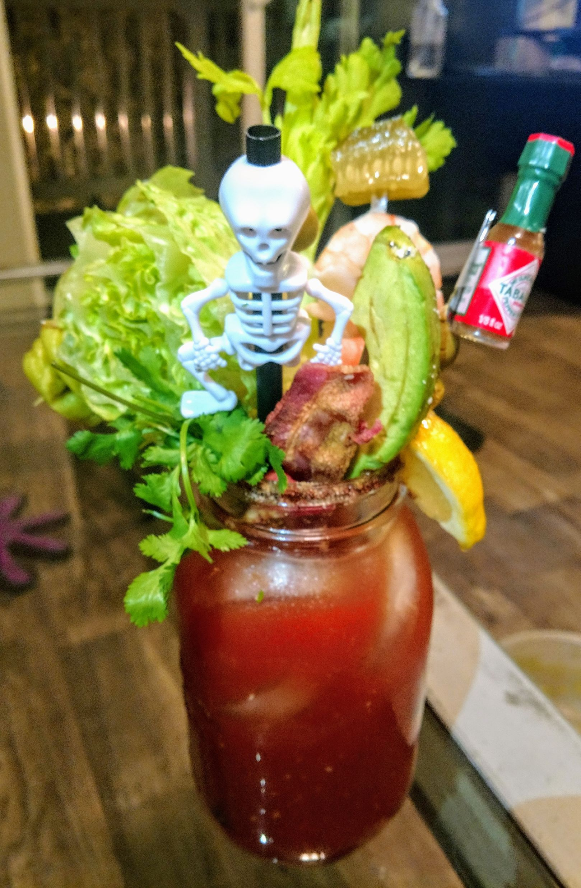

Morning Brunch Bloody Mary

Description
This Brunch Bloody Mary is large and in charge.
Don't be a hero and try to drink it all yourself!
Ingredients
- 1 big bottle of V8
- 5oz Vodka
- 1.5 teaspoons shredded horseradish
- 4 good dashes Worchestershire
- 2-3 dashes hot sauce
- 1 teaspoon lime juice
- celery salt
- garlic powder
- salt and pepper to taste
Steps
- Rim a big ol' mason jar with salt and chili powder
- Fill the jar a little more than halfway with ice
- Mix all ingredients (except tomato juice) together in a separate glass. Mix well,
- Pour all your mixed ingredients over the ice. Fill the jar the rest of the way full with tomato juice. Stir well.
- Garnish the heck out of it, and serve with straws.
Credit
This recipe can be found at its original site here